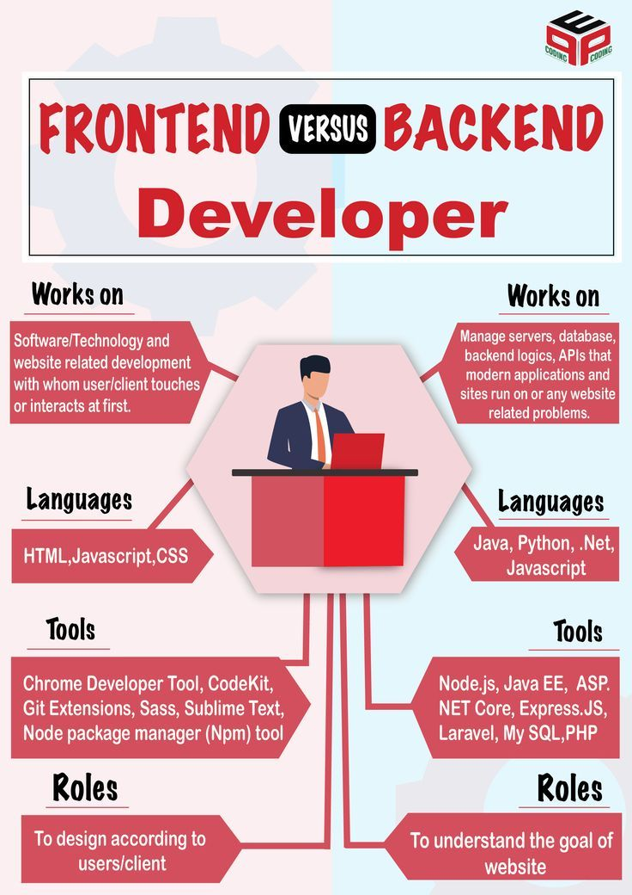
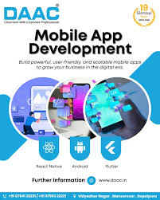

Book our service :
1. Frontend Development Services
We craft stunning, responsive, and user-friendly interfaces that bring your ideas to life. Our frontend team specializes in building fast-loading, pixel-perfect websites and web applications using modern technologies like HTML5, CSS3, JavaScript, React, Vue.js, Next.js, Tailwind CSS, and more. We focus on exceptional user experience (UX), accessibility, performance optimization, and seamless integration with any backend system — ensuring your digital product looks great and works smoothly on every device.
2. Backend Development Services
We build robust, secure, and scalable server-side solutions that power your applications reliably. Our backend experts design and develop high-performance APIs, databases, business logic, authentication systems, and server infrastructure using technologies such as Node.js, Express, Python (Django/Flask/FastAPI), PHP (Laravel), Java (Spring Boot), .NET, Go, and cloud platforms like AWS, Azure, or Google Cloud. We ensure your application handles heavy traffic, maintains data integrity, and stays secure against threats — so your frontend and mobile apps always have a strong foundation.

3. Mobile App Development Services
We create high-quality, native and cross-platform mobile applications for iOS and Android that engage users and drive results. Our mobile development team builds intuitive, feature-rich apps using React Native, Flutter, Swift, Kotlin, or native technologies — delivering smooth performance, offline capabilities, push notifications, and seamless integration with backend services. From MVP to full-scale launches, we handle everything: UI/UX design, app store submission, testing across devices, and ongoing maintenance — helping your business connect with users on the go.
